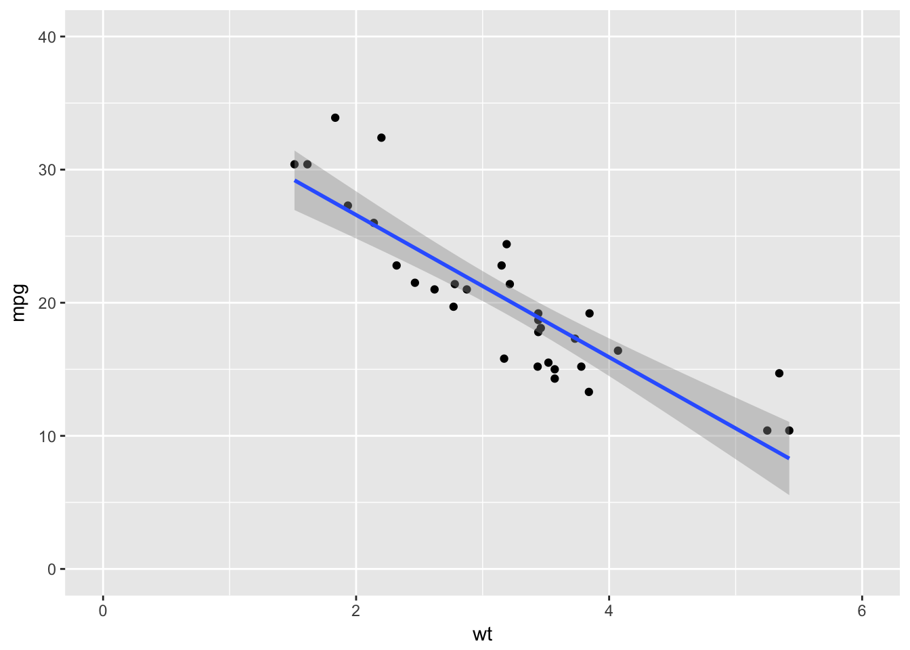
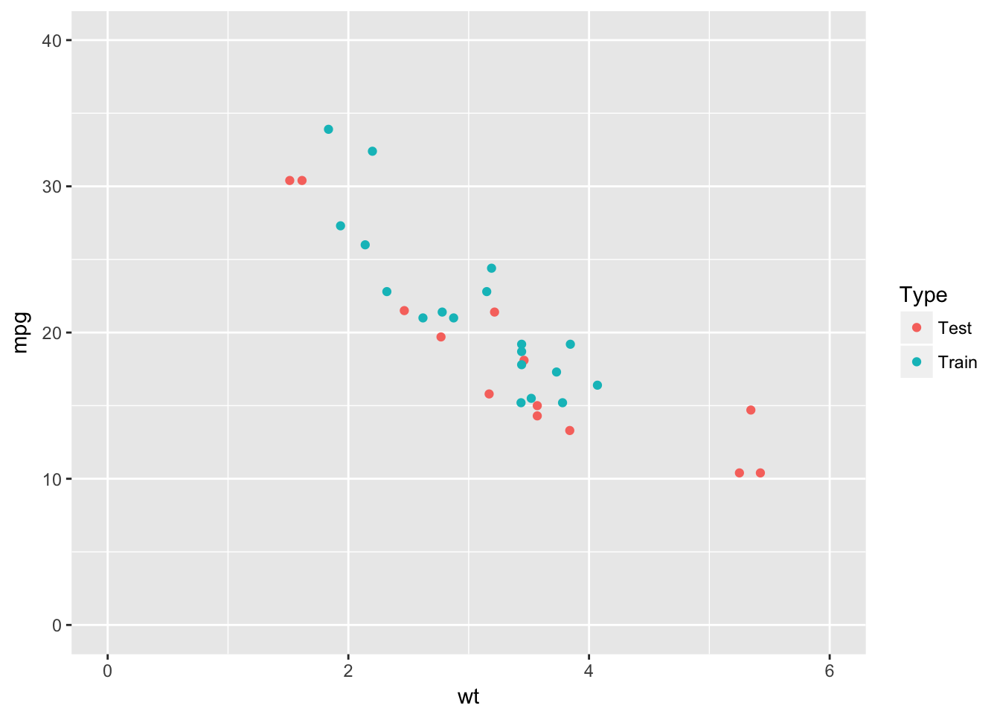

scorer is a set of tools for quickly scoring models in data science and machine learning. This toolset is written in C++, where possible, for blazing fast performance. This toolset’s API follows that of Python’s sklearn.metrics as closely as possible so one can easily switch back and forth between R and Python without too much cognitive dissonance. The following types of metrics are currently implemented in scorer:
- Regression metrics (implemented in 0.2.0)
- Classification metrics (implemented in 0.3.0)
The following types of metrics are soon to be implemented in scorer:
- Multilabel ranking metrics (to be implemented in 0.4.0)
- Clustering metrics (to be implemented in 0.4.0)
- Biclustering metrics (to be implemented in 0.4.0)
- Pairwise metrics (to be implemented in 0.4.0)
Installation
You can install the latest development version from CRAN:
install.packages("scorer")Or from GitHub with:
if (packageVersion("devtools") < 1.6) {
install.packages("devtools")
}
devtools::install_github("paulhendricks/scorer")If you encounter a clear bug, please file a minimal reproducible example on GitHub.
Examples
Regression metrics
Visualize data
library("ggplot2")
ggplot(mtcars, aes(x = wt, y = mpg)) +
geom_point() +
geom_smooth(method = 'lm') +
expand_limits(x = c(0, 6), y = c(0, 40))
Partition data into train and test sets
set.seed(1)
n_train <- floor(nrow(mtcars) * 0.60)
n_test <- nrow(mtcars) - n_train
mask <- sample(c(rep(x = TRUE, times = n_train), rep(x = FALSE, times = n_test)))
mtcars[, "Type"] <- ifelse(mask, "Train", "Test")
train_mtcars <- mtcars[mask, ]
test_mtcars <- mtcars[!mask, ]
ggplot(mtcars, aes(x = wt, y = mpg, color = Type)) +
geom_point() +
expand_limits(x = c(0, 6), y = c(0, 40))
Predict model using the test data set
test_mtcars[, "predicted_mpg"] <- predict(model, newdata = test_mtcars)Score model using various metrics
scorer::mean_absolute_error(test_mtcars[, "mpg"], test_mtcars[, "predicted_mpg"])
#> [1] 3.287805
scorer::mean_squared_error(test_mtcars[, "mpg"], test_mtcars[, "predicted_mpg"])
#> [1] 15.43932Predict final model using the original data set
mtcars[, "predicted_mpg"] <- predict(final_model, newdata = mtcars)Score final model using various metrics
scorer::explained_variance_score(mtcars[, "mpg"], mtcars[, "predicted_mpg"])
#> [1] 847.7252
scorer::unexplained_variance_score(mtcars[, "mpg"], mtcars[, "predicted_mpg"])
#> [1] 278.3219
scorer::total_variance_score(mtcars[, "mpg"], mtcars[, "predicted_mpg"])
#> [1] 1126.047
scorer::r2_score(mtcars[, "mpg"], mtcars[, "predicted_mpg"])
#> [1] 0.7528328Citation
To cite package ‘anonymizer’ in publications use:
Paul Hendricks (2016). scorer: Quickly Score Models in Data Science and Machine Learning. R package version 0.2.0. https://CRAN.R-project.org/package=scorerA BibTeX entry for LaTeX users is
@Manual{,
title = {scorer: Quickly Score Models in Data Science and Machine Learning},
author = {Paul Hendricks},
year = {2016},
note = {R package version 0.2.0},
url = {https://CRAN.R-project.org/package=scorer},
}